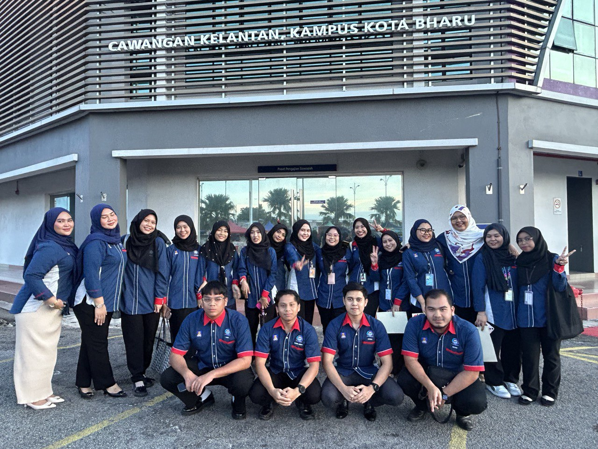
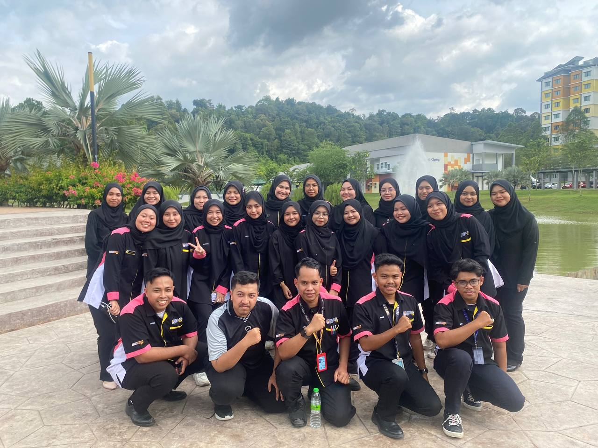

Experience
My Experience
To reach something good it is very useful to have gone astray, and thus acquire experience.

ACADEMIC CLUB : ACADEMIC ASSOCIATION FINANCE REPRESENTATIVE UiTMKB (FINCEPTIVE)
I have joined this club since semester 3 and have been promoted to the position of multimedia exco. I have learned many new things that I never did in high school. It was a great experience when I got to be the vice program director for the entrepreneurship program.

NON-ACADEMIC CLUB : CITY CAMPUS REPRESENTATIVE JAWATANKUASA PERWAKILAN NON-RESIDENT (CCR JPNR)
In the non-academic club, I was given the position of secretariat. The journey is the same as the academic club. I once joined this club in semester 1. In this club, I was given the task of program secretary. The journey of the program was not easy when the program that day, I am grateful that the program is still running and the program committee is giving their best. It was an experience I will never forget.